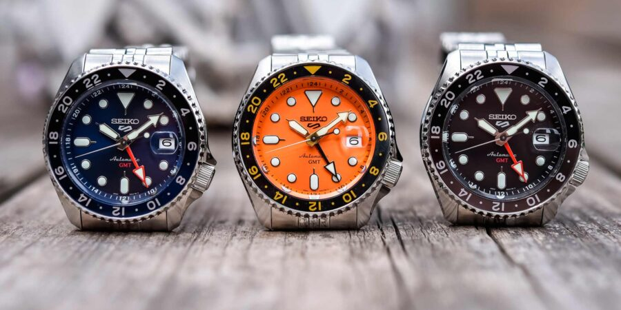
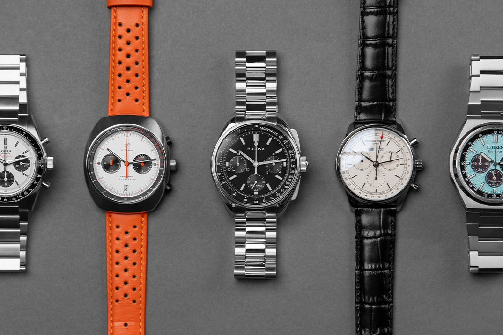

Bienvenidos a Watch Advisor
Explora el facinante mundo de la relogeria y encuentra el reloj perfecto que te acompañara en cada momento. En tu primer reloj te guiaremos con honestidad cuidando tu bolsillo con la mejor calidad posible en base a tu presupuesto para que tomes la mejor decision. deja a un lado la confusion y descubre la pieza que mejor se adapta a tu estilo, presupuesto y personalidad dando inicio a una historia que te acompañara en tu muñeca.
Destacados Del Año
- Bulova lunar pilot: es un cronógrafo de cuarzo de alta precisión con una notable historia relacionada con la misión Apolo 15 de la NASA en 1971. Se considera un "moonwatch" (reloj lunar) alternativo y más accesible que otros modelos más conocidos, como el Omega.
- Seiko prospex: La colección Seiko Prospex (acrónimo de "Professional Specifications") es conocida por ofrecer relojes robustos y fiables para los amantes de los deportes y las aventuras, ya sea en el mar, en el aire o en la tierra. Estos relojes se inspiran en la rica herencia de Seiko en relojería deportiva, que se remonta al lanzamiento de su primer reloj de buceo en 1965.
- Citizen cronografo prototip: Este es un modelo específico que se inspira en un prototipo de Citizen de 1974. Cuenta con la tecnología Eco-Drive de Citizen, que se carga con la luz.
- Zenshin crono: es un reloj de pulsera que combina un cronómetro (medidor de tiempo) con un diseño moderno y minimalista. La colección es conocida por su uso de la tecnología y los materiales exclusivos de la marca japonesa.
- Casio marlin: El apodo Casio Marlin se refiere a la popular serie de relojes de buceo análogos de la línea Casio Duro, destacada por el extinto logo del pez marlín en su esfera y fondo de caja, Estos relojes se distinguen por su excelente relación calidad-precio en la gama de relojes de buceo para principiantes.